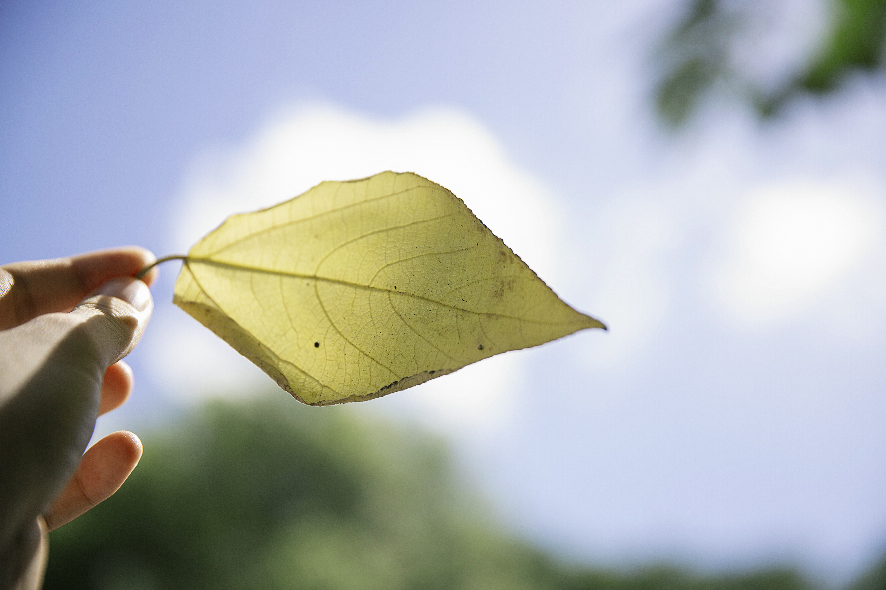
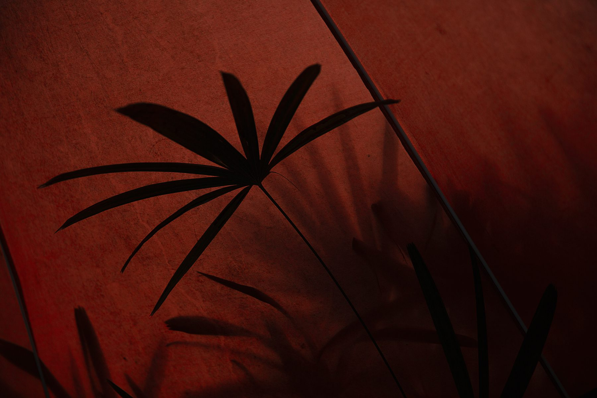

dreams came undone
近鄉情怯
晚上六點，蔥薑蒜爆出溫和的餐點香氣，交織在冬末春初回暖的晚風中。傍晚城市的日光漸熄，籠罩著淡墨般的藍色，樓宇間的燈光零碎地睜開眼。人長大後倘若走在人生」正軌「上，這樣的時刻理應逐漸遠走高飛。所以當夜風拂面而來，靠在窗台旁，努力去捕捉空氣中的氣味時，難以言說是安心的感覺，還是焦慮徬徨，不安於不應該在稀鬆平常的日子裡再擁有這樣的美好瞬間。那是小時候放學，把右側校服外套極力夾在左邊手臂下，遊蕩在回家路上才能擁有的回憶。

